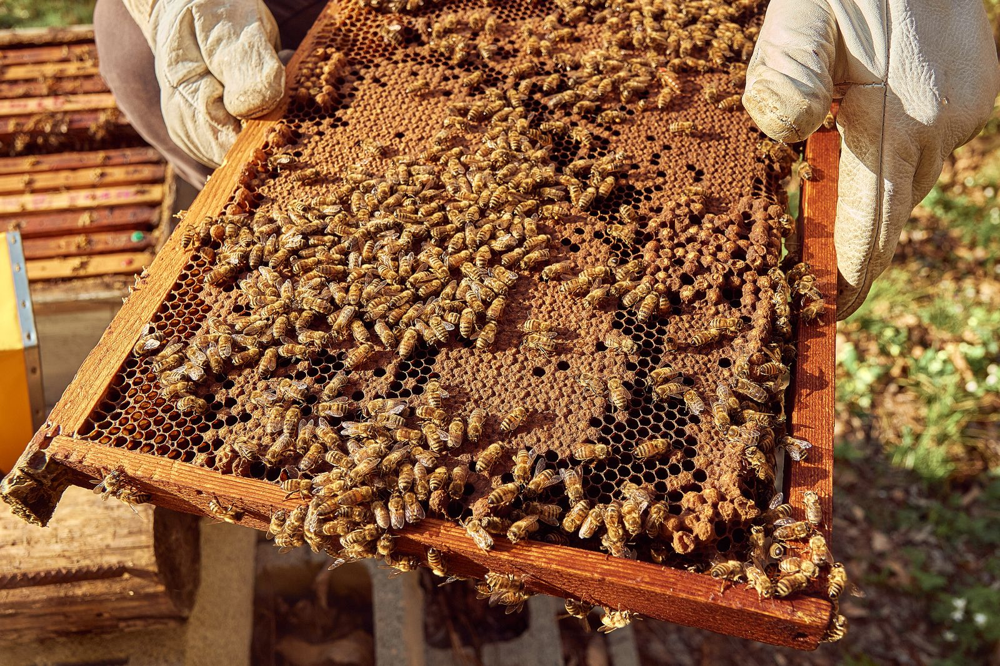
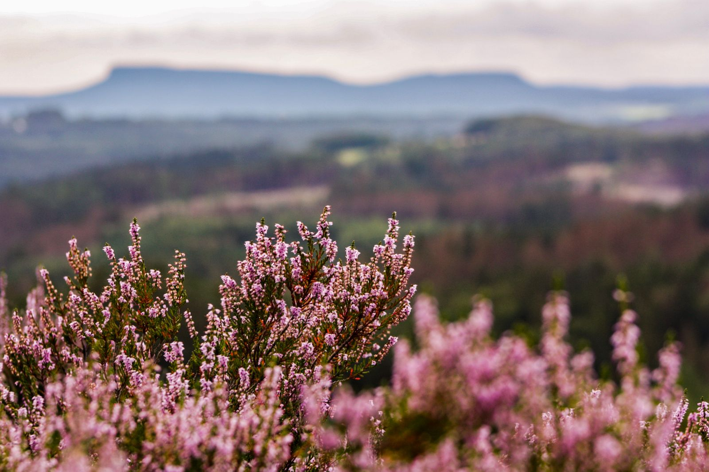

Mazaricos, A Coruña · 140 colmenas · desde 2009
La miel no la hacemos nosotros
La hace lo que florece en los tres kilómetros que hay alrededor de cada colmenar. Ese es el radio en el que una abeja trabaja bien. Cambia el sitio y cambia la miel: por eso aquí hay cuatro colmenares y cuatro mieles, y ninguna se mezcla con otra.
- Radio de vuelo
- 3 km
- Colmenas
- 140
- Mieles distintas
- 4
01 Los colmenares
Cuatro radios de tres kilómetros
Los cuatro están a menos de veinte minutos de casa, y aun así no se parecen en nada. Estos son sus mapas: el anillo exterior es el límite de tres kilómetros, y dentro va dibujado lo que hay. La miel de abajo es la que sale de ahí.
-
Brañas de Xuño · 40 colmenas · 120 m Brañas de Xuño
Brezo de turbera, salgueiro, ameneiro y el zarzal de las lindes.
- Miel
- De brañas
- Color
- Caoba muy oscuro
- Sabor
- Denso, de regaliz y madera mojada
- Cosecha
- Finales de septiembre
-
Alto do Cordal · 30 colmenas · 480 m Alto do Cordal
Brezo de monte y toxo hasta donde alcanza la vista. Nada más, y no hace falta.
- Miel
- De brezo
- Color
- Rojizo oscuro
- Sabor
- Amargo al final, muy persistente
- Cosecha
- Octubre, la última del año
-
Souto de Bealo · 45 colmenas · 210 m Souto de Bealo
Castaños viejos a los dos lados del valle, carballos y silvas en el fondo.
- Miel
- De castaño
- Color
- Ámbar tostado
- Sabor
- Fuerte, con un amargor limpio
- Cosecha
- Primeros de agosto
-
Ribeira do Xallas · 25 colmenas · 60 m Ribeira do Xallas
Eucalipto en las laderas, trébol y silva en los prados de la orilla.
- Miel
- De eucalipto
- Color
- Dorado claro
- Sabor
- Suave, con un fondo de madera
- Cosecha
- Mediados de julio
Los kilos varían mucho de un año a otro: si en agosto llueve tres semanas seguidas, la del brezo no sale. Cuando se acaba una, se acaba hasta el año siguiente; no se compra miel de nadie para rellenar el hueco.
02 El año
Lo que florece y cuándo
Este calendario es el que manda: dice cuándo hay que subir las alzas, cuándo se cosecha y cuándo no se toca nada. Las tres marcas de abajo son las tres cosechas del año.
Comprobando qué florece…
Calendario de floración y de cosechas
- Salgueiro
- Toxo
- Eucalipto
- Castaño
- Silva
- Trébol
- Brezo
En texto: el salgueiro florece de febrero a marzo y el toxo de febrero a abril, y de ahí sale el polen con el que las colmenas arrancan. El eucalipto va de mayo a julio; el castaño, junio y julio; la silva, de junio a agosto; el trébol, de mayo a septiembre; el brezo, de agosto a octubre. Se cosecha tres veces: eucalipto a mediados de julio, castaño a primeros de agosto, y brezo y brañas en octubre.
- Febrero a abrilTrampeo de avispa velutina. Se ponen las trampas de reinas fundadoras; es la única época en que sirven de algo.
- MayoControl de enjambrazón, alzas puestas y núcleos nuevos para reponer las colmenas que no pasaron el invierno.
- Agosto y diciembreTratamiento contra varroa, con producto autorizado y anotado en el cuaderno de explotación.
- Noviembre a eneroNo se abre una colmena. Se pesan por fuera y se les deja la miel que necesitan para el invierno.
03 La miel
La miel es un alimento, no un remedio
Aquí no vas a leer que la miel cura la tos, que refuerza nada ni que sustituye a ningún medicamento. Ni lo decimos ni lo podemos decir: atribuir propiedades curativas a un alimento está prohibido, y además no sería verdad. Lo que sí podemos contar es cómo se trata.
- Decantada, no pasteurizadaSe deja reposar en maduradores y se envasa. No pasa por calor alto, así que no se le va el aroma.
- Filtrada gruesaSolo se le quita la cera y algún resto de la extracción. El resto se queda.
- Que cristalice es normalCasi todas las mieles cristalizan con el tiempo; que una no lo haga nunca es más raro que lo contrario. Si la quieres líquida otra vez, el tarro al baño maría por debajo de 40 °C.
- Se guarda seca y a oscurasEn un armario, con la tapa bien puesta y lejos del fuego. En la nevera no: coge humedad y se pone dura.
- No se la des a menores de doce mesesEs la recomendación de las autoridades sanitarias para cualquier miel, por el riesgo de botulismo infantil. Viene escrita en la etiqueta.

04 Los tarros
Lo que hay este año, con su precio
| Producto | Formato | Precio |
|---|---|---|
| Miel de eucalipto | 500 g | 11,00 € |
| Miel de eucalipto | 1 kg | 19,00 € |
| Miel de castaño | 500 g | 12,50 € |
| Miel de brezo | 500 g | 14,00 € |
| Miel de brañas | 250 g | 7,50 € |
| Cera en velas | 2 unidades | 8,00 € |
| Polen | 125 g | 7,50 € |
Precios de muestra para esta demostración. La de brezo se acaba casi siempre en noviembre. El polen se recoge en primavera y se guarda congelado; se entrega en bolsa cerrada y se conserva en el congelador de casa.

05 Visitas
Abrir una colmena con la cara a medio metro
De abril a septiembre se pueden visitar dos de los cuatro colmenares. Son dos horas: se va andando hasta las colmenas, se abre una, se explica qué se está viendo y se vuelve. No es un espectáculo, es un día de trabajo con gente mirando.
- Duración
- 2 horas
- Grupo
- Máximo 6 personas
- Precio
- 18 € por persona
- Temporada
- De abril a septiembre
Antes de reservar
- El traje y la careta los ponemos nosotros, y son obligatorios.
- Si eres alérgico a la picadura de abeja o de avispa, dilo al reservar. No es una visita para ti, y preferimos decírtelo antes que llevarte al monte.
- A partir de ocho años, y siempre con un adulto.
- Si llueve o hace viento fuerte, no se abre ninguna colmena: se cambia la fecha.
06 Dónde
Se vende aquí y en el mercado
Llevan las colmenas Xoán Ferreiro Lamas, que empezó con seis en 2009, y Sabela Ferreiro, que se ocupa del envasado y de las visitas. No hay tienda en línea: la miel pesa mucho y el porte se come el precio.
Comprobando el horario…
| Lunes | Cerrado |
|---|---|
| Martes | En el mercado de Santa Comba, de 9:00 a 13:30 |
| Miércoles | Cerrado |
| Jueves | Cerrado |
| Viernes | En la casa, de 16:30 a 20:00 |
| Sábado | En la casa, de 10:00 a 14:00 |
| Domingo | Cerrado |
- Teléfono981 00 00 72
- WhatsApp600 00 00 72
- Correomel@meldocordal.example
- DóndeRúa do Campo da Feira, 12 · 15256 Mazaricos (A Coruña)
- RegistrosExplotación de muestra, sin número de registro sanitario ni IGP
Del cuaderno de la casa
Notas de muestra, escritas para esta demostración. No proceden de ninguna plataforma ni de ningún cliente real.
«Le pedí la de brezo en diciembre y me dijo que se había acabado en noviembre, que volviera en octubre. Me pareció una respuesta rarísima hasta que entendí por qué.»
«Fuimos a la visita con dos críos de diez años. Abrió una colmena delante de ellos y no se movieron en veinte minutos.»
También está en
- Ultramarinos Cerqueiro · Santa Comba
- Panadería do Cruceiro · Mazaricos
- A Despensa · Negreira
- Mercado de abastos · Muros, los puestos 7 y 8
Cuatro tiendas más de la comarca. Si en alguna se acabó, en la casa suele quedar.